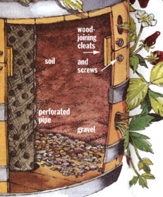
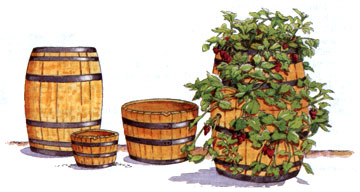
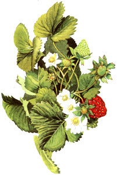

Make An Old-Time Strawberry Barrel
Grow 20 plants in the space of one with a mini high rise. Maximize your strawberry growing space by converting a barrel into a vertical garden.
By John Vivian
June/July 1996
Ah, strawberries... sweet, juicy, fragrant first fruit of the year. Ice cream's irreplaceable sidecar, and arguably the world's best snack. Oh yeah, there's also the small matter of pruning, mulch, fertilizing, and waiting a year for the delectable return. Plus, established berry plants produce a network of runners-long spreading stems with a baby plant at each node that can snarl so densely that fruiting is reduced, disease spreads readily and the plot must be raked out every fall and dug under and replanted or moved every two or three years. The road to heaven is paved with work.
How'd you like to have the equivalent of a 25-foot garden row on only four square feet of land, right outside the sunny south door of the house-without the stooplabor of a berry patch, and with fruit coming on much earlier? This can be done by flanking your front door with a matched pair of old-time strawberry barrels, each hosting 18 or 20 plants on the three or four square feet of land that would ordinarily be occupied by but one or two berry plants.
In a barrel, each plant remains a solitary and can be treated as tenderly as a house plant. Fruit stays off the ground, away from rots and molds, from marauding slugs, bugs, and meadow mice. Air flows freely, so diseases do not spread. And runners are either absent or captured in small plastic pots and the baby plants used to replace failing parent plants in following years.
The Barrel
First, though, you have to locate a suitable barrel. Iron-bound, wood-slat barrels are no longer used to ship pickles, molasses, nuts, bolts, rum, salt fish, nails, crackers, and more, as they were 100 years ago when every farm had a 40-gallon water barrel under the downspout and 5- to 30gallon berry barrels at each side of the front porch steps.
You still can find flimsy little nail kegs made of thin pine slats and wire hoops that aren't worth the bother. And you may be able to locate a good old hardwood keg in the back room of the local feed store. The homesteading-gear catalogs that advertise in MOTHER sell new-made goodquality casks by mail if your pocketbook can take it.
But the only potential real strawberry barrels I know of that are commonly available at retail are 30-gallon kegs fashioned from staves of sweet white oak or beech wood. The kegs are cut in half and sold as patio planters for about $30 apiece at major lumberyards and home and garden supply outlets. Some are brand new, of raw wood or wax-coated, and others are ex-whiskey-aging barrels from Tennessee and Kentucky that are charred inside and still carry the fine aroma of Jack Daniels Old No. 7. By law, these well-made steelstrapped, white-oak casks can't be used to age whiskey but once, so when you make berry barrels of them you are recycling a prime American forest product that has already served a great and noble cause. Your strawberries might even carry a hint of aperitif fraises.
Get two half-kegs for each strawberry barrel, and mate them rim-to-rim like a clam shell. When it comes time to replenish the soil, you'll find that being able to split the barrel makes the job easier than having to deep-dive into a single cask of any size. While you're at the building center, get a yard or two of rustproof finemesh window screening and a length of perforated plastic leach-field pipe 6" shorter than the barrel will be high once the halves are mated one atop the other-typically 30 inches for a 30-gallon cask. Get the largest-diameter perfpipe you can. It will go down the center of the barrel to drain the soil inside and reduce weight by supplanting center-of-barrel soil that the berry plants wouldn't use.
Reinforcing
The keg halves lack the self-supporting integrity of a whole bent-stave barrel, so get out your electric drill and 3/32" metal-cutting bit and drill through steel hoopstraps and 1/2" into the center of each stave. Insert 3/4" #6 stainless steel roundhead wood screws.
When you pick up the barrel halves from the yard, also get a 5' or 6' length of 1" x 2" red oak or other hardwood. At home, cut the oak into four 8"-long slats with angled ends so they'll fit snugly to the sides of the barrel. Place them inside, on the bottom of each half-keg, perpendicular to the slats that make up the end plugs. Fasten two reinforcing slats to each end plug-angled ends tight against barrel sides, parallel to one another. Use stainless screws.
In the end of the half-barrel that will serve as the bottom, use a saber saw with a long blade to remove a circle of wood a bit larger than the drain pipe is around. In the end of the other that will be the top half, cut out the center leaving only a one-inch-wide lifesaver of top boards in place around the perimeter. (Yes, you may be cutting out some of the cross-braces you installed. But if you hadn't put them in, the half-barrels could have fallen apart at this phase.)
Mark locations for rings of planting holes-one between the rim and the first metal hoop ...the second between the two metal hoops enclosing each barrel half ...a third between bottom hoops if you have a 7-hoop Scotch-whiskey-style aging barrel. Some large-size bisected barrels will have two hoops per half-and some of these will have hoops spaced so that you can drill out two tiers of holes; others will allow only a single tier. Locate holes in every other stave in each tier and stagger holes above the other in adjoining tiers. Then, with a 2" hole-saw on the hand drill (or making circles by drilling a series of smaller holes in a circle), cut out the planting holes. Temporarily stack the halves together as mirror images and drill out another ring of planting holes along the seam-staggered between final rings of holes in each half.
Location
Place the barrels-small end cutouts down-where your berry plants will get full daytime sun. Dig out a circle of sod and topsoil a foot wider than the barrel, and replace with leveled flat rock or bricks on a disc of well-tamped crushed rock. The firm but water-permeable base will provide a solid footing, help drain soil inside the barrel, and keep the bottomwood dry and rot-free longer than if the barrel sat directly on the soil.
If it is still late winter in your area, start a couple of flats of Alpine strawberry seeds. These European wild strawberry plants, base stock for modern cultivated varieties, are hardy perennials that produce small berries-but more and larger fruit than our own na tive strawberries. They don't produce strength sapping runners.
This is the fruit that's dropped in to champagne by romantically-inclined French, and Swedish movie director Ingmar Bergman named a famous art film after them. The new variety Temptation (from Thompson & Morgan, New Jersey-based im porters of European seed; and the Canadian seedsmen Stokes Seeds) is much im proved over tradi tional and named varieties. Fifty or 80 of the tiny seeds cost about four dollars-expensive, but cheaper than two 25-plant bundles of con ventional plants.
Put the seed into germination mode by enclosing in an airtight plastic bag or freezer container and keeping in your freezer for a month. Keep the container closed and in a cool place to warm gradually. Plant in sterilized starting medium (bury a potato in a pot of your own compost and bake at 350° till done) and water from beneath the flat to keep mildew from infesting the top of the soil and killing the seedlings before they emerge in another four weeks.
Make every effort to maintain a constant soil temperature of 65° to 70° till seed germinates. A thermostatically controlled warming mat (offered in most seed catalogs) placed under the flat is the best way I know to achieve a constant soil temp. The under-flat warming promotes strong root growth. Once plants are up, you can discontinue the sub-flat warming. But keep watering from below. And assure a constant airflow over the flats to prevent fungus from girdling the little vlants at soil level. I bring well started plants into the front room where windows are open on warm days, and where, during spring cold snaps, convection from the woodstove keeps dry air moving imperceptibly but constantly.
Transplant to peat pots and harden off in an outside cold frame for a week or more before setting in the barrel, just as you do your tomato seedlings. However, don't mingle tomato or eggplant seedlings with the strawberry plants. Nightshade family members can carry viruses that will hinder or kill the young berry plants.
If all the bother of starting strawberries from seed does not appeal, you can order a 25-plant bundle of runner-grown strawberry plants for each barrel. Chose the day-neutral or everbearing variety best suited to your climate; see store or catalog descriptions, as new varieties are being developed every year. W. Atlee Burpee recommends the day-neutral variety Tristar for barrel culture.
Both seed-grown and live everbearing and day-neutral varieties will produce a small crop the late summer and fall of their planting year and then produce throughout the growing season the next year and for several years more before they should be replaced with clones from new seed, plant divisions, or their own runners.
Setting Out
Get a barrel full of rich compost from your own pile or mix a batch using screened, rock-free top soil mixed 4:1 with a soil conditioner such as vermiculite, and liberal amounts of the natural plant nutrients cottonseed and bone meal, greensand and lime. Do not add much lime unless your soil is very acidic. Soil should be neutral, with a pH of seven.
Set the bottom barrel half on the base, assuring that it rests level and firm. Trim the perforated pipe so it is 1 1/2 times the height of a half-barrel (only 2/3 the height of the completed barrel). Wrap the pipe in several thicknesses of window screen, set bottom of pipe in the center hole in the base, securing it with soil packed around firmly. Add more soil, packing it around the pipe. When you reach planting holes, inset plants with roots splayed out on the soil in a fan shape and with crown and leaves projecting beyond the inner surface of the barrel. Insert a wood chip or flat rock to block top of planting hole above each plant crown to keep soil from flowing out during heavy rains that can soak the soil in early spring before plants' root systems are well established. Pack soil especially well around roots.
Set the top half of the barrel on the bottom. Equidistant round the seam, sink three- or four-inch lengths of hardwood into the soil in the bottom half. Put screws through the outside of top-half slats and into the wood cleats. This will keep the top from slipping off the bottom.
Add soil and plants till you get to the top of the central drain pipe. Cover with a slate or thin shale split or several thicknesses of window screen to keep soil from draining through.
In the six inches of soil in the barrel's top, set one berry plant in the center and space three or four more around the rim.
Care
Keep watered till spring rains arrive, pinch off spring blooms and runners to encourage root growth ...and by August you can begin harvesting as much fruit from a barrel as you'd get from a 25-foot row of garden.
Do select one strong runner (snip off the rest) from each non-Alpine berry plant, and plug the baby plant into a plastic pot filled with soil and suspended from the barrel rim by a length of coat hanger formed in a hanger-hook on top and a pot-hanger loop at the bottom. When plantlets are rooted, transplant to the garden and keep blossoms and runners pinched off. In the late fall, dig plants, store with roots in moist sawdust in a cool dry place over winter and use to replace the less thrifty parent plants the following spring.
Setting new plants into a planting hole in the barrel takes patience and a deft hand. Use an old dull-ended table knife to lever the wood or slate chip covering the top of the hole up into the planting medium. Dig out the old plant and use a spoon to remove a core of soil and root pieces three inches deep into barrel. Soak roots of new plants inside hole with dilute liquid fertilizer.
Insert new plant roots into planting hole and spread into a fan as much as possible. Be sure roots are all inside barrel but bud and stems are outside. Fill a narrow trowel with soil mix, place tip into hole, resting gently on top of plant bud, and push soil-little bits at a time-into the hole with table knife. Push soil all the way to the back of the open core, and pack tight as you can without bruising the new plant. Then, use knife to lever the wood or slate chip down to close the upper portion of the hole again.
When Alpine plants begin showing the red leaves of viral disease or production begins to slow, start a new batch of seeds. Renew conventional runner-grown plants with their own runner clones captured in hanging pots, or from a bundle of nursery-grown plants.
Break down the barrel and replace soil every few years-especially if foliage is turning red prematurely, or you find that plants are easy to pull out of the soil and roots appear rotten. It is a good idea to let barrels rest-empty of soil and open to the rain and sun-for a season every so often to discourage buildup of mold diseases in the wood.
Harvesting the Sun
To reflect growth-promoting sunlight toward the plants at the shaded back of the barrel, tack strips of aluminum flashing or used printing plates from the local newspaper-the shiniest side of the aluminum facing out-tacked to simple rectangular wooden frames about as high and wide as the barrel. Arrange them at the back and to each side of the barrel, canted at an angle so they direct sunlight on the plants at the rear.
Strawberry plants will survive most any degree of cold, but need protection from drying winter winds-even in the South. Once plants have gone dormant after hard frost in the fall, sheath the barrel in tubes of tar paper with straw packed loosely between barrel and tar paper, or in a wrapped bandage of dark burlap. Cover the top with burlap even if you use tar paper around the sides, so water can get through. Do not enclose the barrels in plastic sheeting or the plants will suffocate.
The combination of dark winter-cover and the barrel's exposed location will warm the soil and get your plants growing up to a month earlier than garden-planted strawberries. Remove the winter protection as soon as temperatures begin to moderate in late February or early March.
After the soil thaws, water with a rich manure tea or weak solution of soluble packaged plant food to give the plants a kick-start. Soak the barrel with a trickling hose any time you go without rain for more than a week during the season.
Then, all year long, year after year, you'll enjoy a vista of bright green foliage, white and yellow flowers, and red berries. And you will feast on an abundance of fresh, soil-free, and bugless fruit from overbearing plants grown in an old-time, space-conserving strawberry barrel.
STRETCH YOUR HARVEST
A strawberry barrel won't produce huge crops, but the high flavor, tangy scent, and bright crimson color of just a few fruit can be easily extended.
COLOR: Like us, do you try to avoid any packaged food containing Red Dye #3 or other artificial colors or flavors? Know how fresh strawberries put a long-lasting stain on your fingers, little kids' Tshirts, and your jelly bag? Let several bug-bit fruit ripen till soft and deep red (relatively tasteless, but rich in color). Crush and use the juice to add color to apple jelly, fruit punch, or homemade ice pops or applesauce. You can also mix it with vinegar to boil-dye white cotton cloth a lovely strawberry pink.
ZEST: When yours is the only kitchen in the neighborhood to have garden-fresh strawberries in September, slice them thin, cover with sugar, and let steep to a luscious, fragrant syrup. Mix with equal parts sugar and plain gelatin to make real strawberry-flavor jelled desert. Drizzle a spoonful over pudding or custard, vanilla ice cream, or fall apple pie to add zing to a pallid desert.
PERFUME: When frost catches a few berries, let them air-dry on the plant. Bring the dry berries inside, crush, and add their fragrance to scented sugars or mix into your potpourris and sachets.
-Martha Vivian
 The keg halves lack the self-supporting integrity of a whole bent-stave barrel, so red oak (or other hardwood) cleats are installed with stainless screws to each half. The barrel is then placed on a small foundation of crushed rocks or brick. This not only provides a sure footing but will keep the bottom wood dry and rot free. |
 |
 |
|
 |
|
|